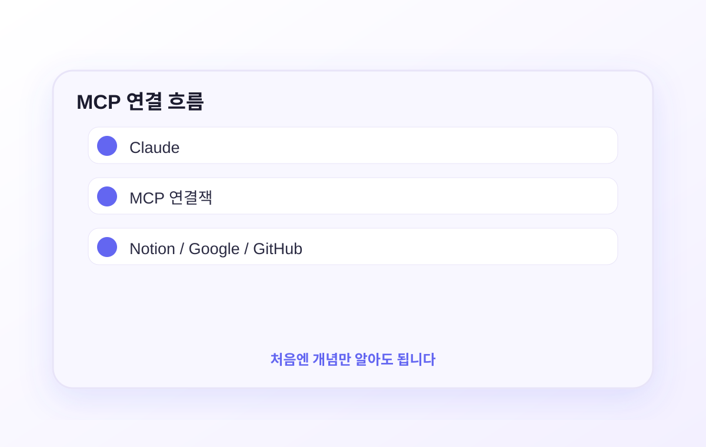
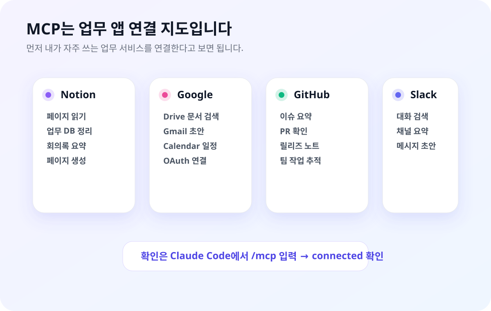

MCP를 연결하면 Claude가 Notion, Google Drive, GitHub, Slack 같은 외부 앱 자료를 참고할 수 있습니다. 비개발자는 설정값을 외우기보다 “이 앱을 연결해줘”라고 맡기는 방식으로 시작하면 됩니다.
MCP도 직접 설정을 외우는 편이 아닙니다. 처음에는 “Notion을 연결해줘”, “Google Drive를 연결해줘”, “GitHub 이슈를 읽게 해줘”처럼 원하는 연결을 Claude Code에게 말로 시키는 것만 익히면 됩니다. 패키지명과 설정 파일은 Claude가 찾아서 처리하게 두세요.
MCP는 연결잭처럼 보면 됩니다
처음부터 설정을 외울 필요 없습니다. Claude가 다른 앱을 보게 해주는 연결 방식이라고만 이해하세요.

개념 확인: Claude와 Notion, Google, GitHub 사이에 연결잭을 꽂는 느낌입니다.

먼저 볼 것: 패키지명보다 어떤 앱을 연결할지부터 정하면 됩니다.
Notion MCP를 처음 연결했을 때 진짜 놀랐어요. "내 Notion 2025 전략 문서 요약해줘"라고 했더니 Claude가 바로 노션에 접속해서 읽어서 답을 줬습니다. 직접 복붙하거나 내용 설명할 필요가 없었어요. 한 번 설정해두면 계속 씁니다.
API · CLI · MCP — 먼저 구분하고 가기
Claude를 쓰는 방법은 크게 세 가지입니다. 헷갈리기 쉬운 개념이라 먼저 짚고 넘어갑니다.
⚙️ API
개발자가 코드로 Claude를 직접 호출하는 방식. HTTP 요청으로 응답을 받습니다. 자사 서비스·앱에 Claude를 내장할 때 사용. 이 가이드에서는 다루지 않습니다.
⌨️ CLI (명령줄 도구)
터미널에서 명령어로 사용하는 방식의 총칭입니다. 예를 들어 구글은 gcloud, AWS는 aws, GitHub은 gh처럼 각 서비스마다 CLI가 있습니다. Claude도 claude라는 CLI가 있고, 1~5편에서 써온 것이 바로 이겁니다.
🔌 MCP
Claude에 외부 서비스·도구를 연결하는 확장 레이어. Notion, Google Drive, GitHub, Slack 같은 업무 앱을 Claude가 직접 참고하게 해줍니다. 이 편의 핵심.
한 줄 정리 API = 개발자가 코드로 Claude를 부르는 것 |
CLI = 터미널에서 내가 직접 쓰는 것 |
MCP = CLI/Desktop에 외부 도구를 붙여 능력을 확장하는 것
Claude Desktop vs Claude Code — 어디서 쓰냐에 따라 다릅니다
MCP 설정 방법은 어느 Claude 앱을 쓰느냐에 따라 다릅니다. 설정 파일 위치나 경로는 몰라도 됩니다. 어느 쪽이든 Claude에게 말로 부탁하면 됩니다.
🖥️ Claude Desktop
GUI 앱에서 Claude와 대화하는 방식.
MCP를 연결하면 앱을 재시작할 때 자동으로 적용됩니다.
설정 방법: Claude Code 터미널에서 "Claude Desktop에도 Notion MCP 추가해줘"라고 말하면 설정 파일 위치는 Claude가 찾아서 처리합니다.
⌨️ Claude Code (터미널)
터미널에서 claude 명령어로 쓰는 방식.
MCP를 연결하면 다음 세션부터 자동으로 로드됩니다.
설정 방법: 그냥 "Notion MCP 연결해줘"라고 말하면 Claude가 직접 설정합니다.
이 가이드의 성공 기준
Claude Code에서 MCP 서버 1개 이상을 연결하고, 새 세션에서 /mcp로 connected 상태를 확인합니다. Notion·Google Drive·GitHub 중 하나만 성공해도 충분합니다.
자주 쓰는 MCP 연결 목록
처음에는 Notion, Google, GitHub처럼 실제 업무 서비스와 연결되는 MCP만 보면 됩니다.
처음 볼 만한 MCP
서비스
패키지명
할 수 있는 것
◻️ Notion
@notionhq/notion-mcp-server
노션 페이지·DB 읽기·쓰기·검색
🐙 GitHub
@modelcontextprotocol/server-github
이슈·PR·코드 읽기, 이슈 생성
💬 Slack
@modelcontextprotocol/server-slack
채널 메시지 읽기, 메시지 전송
📁 Google Drive
@modelcontextprotocol/server-gdrive
드라이브 파일 검색·읽기
🔍 Brave Search
@modelcontextprotocol/server-brave-search
실시간 웹 검색 (API 키 필요)
🐘 PostgreSQL
@modelcontextprotocol/server-postgres
DB 쿼리·스키마 조회
더 많은 MCP는 어디서? modelcontextprotocol.io/servers — Anthropic이 관리하는 공식 MCP 목록 github.com/modelcontextprotocol/servers — 소스코드 및 설치 방법 문서
어떤 MCP부터 써야 하나요?
🥇 처음이라면 — Notion MCP
노션 페이지와 업무 DB를 Claude가 직접 읽게 만들 수 있습니다. 복붙 없이 회의록, 기획안, 업무 DB를 요약·정리하는 흐름부터 시작하기 좋습니다.
📁 문서가 많다면 — Google Drive MCP
드라이브 문서를 찾고 읽는 일을 Claude에게 맡길 수 있습니다. Gmail·Calendar까지 확장하면 메일과 일정도 함께 정리할 수 있습니다.
🐙 프로젝트 관리가 필요하면 — GitHub MCP
개발자가 아니어도 이슈, PR, 릴리즈 노트를 Claude가 읽고 요약하게 할 수 있습니다. 팀 프로젝트 상황 파악용으로 좋습니다.
📡 최신 정보가 필요하면 — Brave Search
Claude의 학습 데이터 이후 최신 정보를 실시간으로 검색합니다. Brave Search 무료 API 키 발급 필요.
커뮤니티 MCP 주의
npm에는 수백 가지 커뮤니티 MCP가 있습니다. 하지만 검증되지 않은 MCP는 보안 위험이 있습니다. 처음에는 위 공식 목록만 쓰는 것을 강하게 권장합니다.
Claude Desktop에서도 쓸 때
설정 파일이 어디 있는지, 어떻게 고치는지 몰라도 됩니다. Claude Code에게 부탁하면 알아서 해줍니다.
Claude Desktop 설정은 내부적으로 파일을 수정해야 하지만, 그 과정을 직접 할 필요가 없습니다. Claude Code 터미널을 열고 "Desktop에 MCP 연결해줘"라고 하면 Claude가 설정 파일을 찾아서 직접 수정해줍니다.
Desktop 연결도 Claude Code에게 부탁하세요
Notion MCP 연결
Claude Desktop에 Notion MCP도 연결해줘. API 키는 어디에 넣으면 돼?
API 키를 대화창에 직접 입력하지 말고 환경변수로 등록하는 게 안전합니다. 방법을 안내해드리겠습니다...
현재 설정 확인은 /mcp로 합니다
Claude Code에서는 설정 파일을 직접 열어보는 것보다 새 세션에서 /mcp를 입력하는 편이 정확합니다. 연결된 MCP 이름과 상태가 한 번에 표시됩니다.
적용 확인
창을 닫는 것만으로는 안 됩니다. Mac은 Cmd+Q, Windows는 트레이 아이콘 우클릭 → 종료로 완전히 끄고 다시 여세요.
새 대화 시작 → 입력창 하단에 🔌 아이콘이 표시되면 성공.
Notion이라면: "내 Notion에서 회의록 페이지 찾아서 요약해줘"
Claude Code에서 MCP 설정
Claude Code에서는 그냥 말로 부탁하면 됩니다. 설정 파일이나 명령어를 외울 필요 없습니다.
Claude Code의 가장 큰 장점이 여기서 나옵니다. "Notion MCP 연결해줘"라고 하면 Claude가 직접 설정 파일을 찾아서 수정해줍니다. JSON이 뭔지, 어디에 파일이 있는지 몰라도 됩니다.
그냥 말로 부탁하세요
Claude Code 터미널을 열고 원하는 MCP를 자연어로 요청하면 됩니다.
Notion MCP 연결 요청
Notion MCP 연결하고 싶어. API 키를 대화창에 붙여넣지 않고 안전하게 설정하는 방법 알려줘.
Notion MCP를 설정하겠습니다. settings.json에 추가했습니다. 연결할 노션 페이지에는 Integration 권한을 따로 허용해야 합니다 — 노션 페이지 우상단 ••• → Connections에서 추가하세요.
새 세션에서 /mcp 입력
MCP 설정 후 터미널을 새로 열고 claude를 다시 실행한 뒤, /mcp를 입력하면 연결된 서버 목록이 표시됩니다. "connected"가 뜨면 성공입니다.
Claude Desktop과 함께 쓴다면?
Desktop은 설정 파일이 다릅니다
Claude Code에서 말로 부탁하면 ~/.claude/settings.json만 수정됩니다. Claude Desktop에서도 같은 MCP를 쓰고 싶다면 "Desktop 설정 파일에도 추가해줘"라고 말하거나, Step 3의 방법으로 별도 설정해야 합니다.
Notion MCP 실전
노션 페이지를 Claude가 직접 읽습니다. API 키 발급부터 실전 활용까지.
Notion API 키 발급
notion.so/my-integrations 접속 → "New integration" 클릭
이름 입력 (예: "Claude MCP") → 워크스페이스 선택 → Submit. Internal integration으로 만들면 됩니다.
"Internal Integration Secret" 값을 복사해둡니다. secret_로 시작하는 긴 문자열입니다.
Claude가 읽어야 할 노션 페이지 → 우상단 ••• → Connections → 방금 만든 Integration 선택. 이 단계를 빠뜨리면 Claude가 페이지를 못 읽습니다.
MCP 설정에 추가
Claude Code (터미널) — 그냥 물어보세요▶
Notion MCP 연결해줘. API 키는 어디에 넣으면 될까?
API 키를 대화창에 직접 입력하지 말고, 환경변수로 등록하는 게 안전합니다. 터미널에서 아래처럼 설정해주세요. 그러면 제가 그 환경변수를 읽어서 MCP 설정을 완료하겠습니다.
Claude가 API 키를 안전하게 처리하는 방법까지 직접 안내해줍니다.
Claude Desktop — 설정 파일에 추가▶
Claude Code에게 Desktop 설정도 함께 부탁할 수 있습니다.
Claude Desktop 설정 파일에도 Notion MCP 추가해줘.
claude_desktop_config.json 파일을 찾아서 Notion MCP 설정을 추가했습니다. Desktop 앱을 완전 종료 후 재시작하면 적용됩니다.
실전 활용 예시
📋 특정 페이지 요약▶
내 Notion에서 "2025 마케팅 전략" 페이지 찾아서 핵심 내용 3줄로 요약해줘.
Notion에서 "2025 마케팅 전략" 페이지를 찾겠습니다... 페이지를 읽었습니다. 핵심 내용 3줄 요약:
📊 DB에서 이번 주 할 일 추출▶
내 Notion "업무 DB" 데이터베이스에서 이번 주 마감인 항목들만 골라서 우선순위 순으로 정리해줘.
📝 분석 결과를 노션 페이지로 저장▶
방금 분석한 내용을 내 Notion "보고서" 폴더 안에 "2025-01 분석 요약"이라는 제목으로 새 페이지 만들어줘.
Notion에 새 페이지를 만들겠습니다... 페이지가 생성됐습니다. 링크: notion.so/...
페이지 이름을 정확히 말하세요
"내 전략 문서"보다 "내 Notion의 '2025 마케팅 전략' 페이지"처럼 정확한 제목을 말할수록 Claude가 올바른 페이지를 빠르게 찾습니다.
Google MCP 실전
Gmail · Drive · Calendar를 Claude가 직접 읽고 씁니다. 연결 전에 Google Cloud Console에서 한 번만 설정이 필요합니다.
Google MCP는 Notion과 달리 API 키가 아니라 OAuth 방식입니다. Google Cloud Console에서 몇 가지 버튼을 클릭해야 하는 사전 작업이 있습니다. 조금 복잡해 보이지만 Claude에게 단계마다 물어보면서 진행하면 됩니다.
1단계 — Google Cloud Console 사전 준비
Claude가 내 Google 계정에 접근하려면 Google의 허가가 필요합니다. Google Cloud Console에서 "내 앱이 이 정도 권한으로 접근해도 됩니다"라고 등록하는 과정입니다. 한 번만 하면 됩니다.
브라우저에서 console.cloud.google.com 접속. 구글 계정으로 로그인합니다.
상단 프로젝트 선택 드롭다운 → "새 프로젝트" → 이름 입력 (예: Claude MCP) → "만들기" 클릭. 프로젝트가 선택된 상태로 바뀌면 완료.
좌측 메뉴 → "API 및 서비스" → "라이브러리". 아래 API를 각각 검색해서 "사용" 버튼을 누릅니다.
쓸 서비스만 골라서 활성화하면 됩니다:
• Gmail을 쓸 경우 → Gmail API
• Drive를 쓸 경우 → Google Drive API
• Calendar를 쓸 경우 → Google Calendar API
좌측 메뉴 → "API 및 서비스" → "OAuth 동의 화면" → User Type: 외부(External) 선택 → "만들기".
앱 이름 (예: Claude MCP), 사용자 지원 이메일 (내 Gmail), 개발자 연락처 이메일 입력 → "저장 후 계속" 클릭.
범위(Scopes) 화면 → 그냥 "저장 후 계속". 테스트 사용자 화면 → "사용자 추가" → 내 Gmail 추가 → 저장.
좌측 메뉴 → "API 및 서비스" → "사용자 인증 정보" → "+ 사용자 인증 정보 만들기" → "OAuth 클라이언트 ID".
애플리케이션 유형: 데스크톱 앱 선택 → 이름 입력 → "만들기".
팝업에서 JSON 다운로드 버튼 클릭 → 파일을 적당한 곳에 저장해둡니다.
막히면 Claude에게 물어보세요
"Google Cloud Console에서 OAuth 클라이언트 ID 만드는 방법 단계별로 알려줘"라고 하면 현재 화면 기준으로 안내해줍니다.
2단계 — Claude Code에서 연결
JSON 파일을 받았으면, Claude Code 터미널에서 자연어로 연결을 요청합니다.
Google MCP 연결 요청
Google Drive MCP 연결해줘. OAuth JSON 파일 다운받았어. 어디에 넣으면 돼?
JSON 파일 경로를 알려주시면 설정에 추가하겠습니다. 처음 실행 시 브라우저에서 Google 로그인 화면이 열리고, 허용 버튼을 누르면 인증이 완료됩니다.
Gmail이랑 Google Calendar도 MCP로 연결해줘. OAuth는 이미 설정했어.
Gmail MCP와 Google Calendar MCP를 설정하겠습니다. 같은 OAuth 클라이언트 JSON을 사용하면 됩니다. settings.json에 추가했습니다.
연결 후 활용 예시
📧 Gmail 활용▶
오늘 받은 이메일 중 답장이 필요한 것만 골라줘.
김팀장 이메일에 "내일 오전 10시 가능합니다" 내용으로 답장 초안 써줘.
지난달 거래처에서 온 견적서 이메일 찾아줘.
📁 Google Drive 활용▶
드라이브에서 "3분기 보고서" 찾아서 핵심 내용 요약해줘.
드라이브 "팀 공유" 폴더에서 최근 2주 안에 수정된 파일 목록 알려줘.
📅 Google Calendar 활용▶
이번 주 일정 알려줘.
내일 오후 2시에 팀 미팅 30분 잡아줘. 제목은 "주간 싱크".
다음 주 빈 시간 중 1시간짜리 집중 작업 블록 3개 만들어줘.
Gmail은 초안 작성까지만 합니다
실수로 잘못된 이메일이 발송되는 것을 막기 위해 Claude는 답장 초안 작성까지만 합니다. 직접 발송은 Gmail에서 확인 후 본인이 합니다.
6편 완료!
API·CLI·MCP 개념, Notion·Google·GitHub 중심 연결, /mcp 확인법까지 마쳤습니다.
다음은 7편: Skills — 반복 작업을 /명령어로입니다.